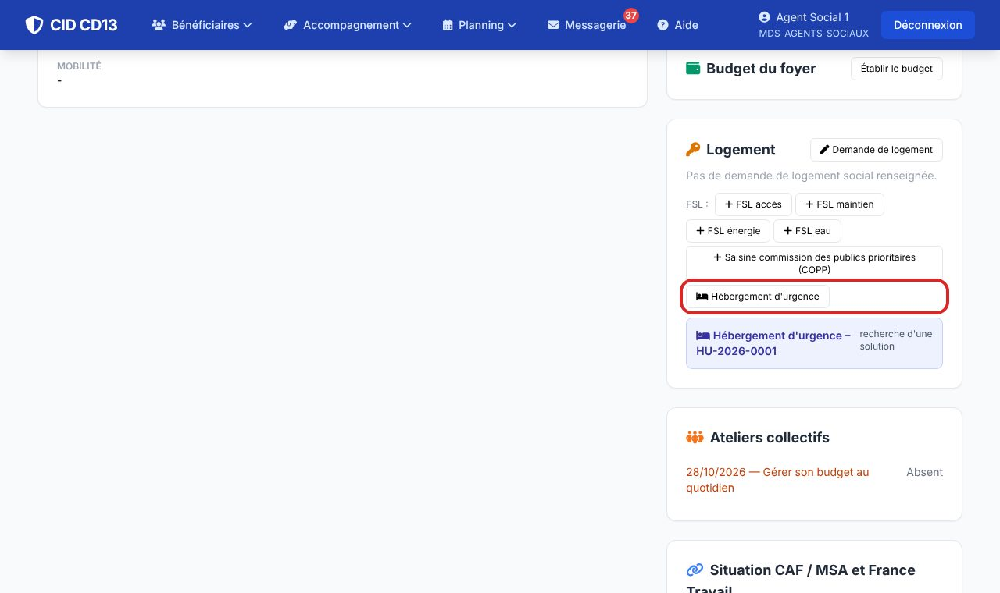
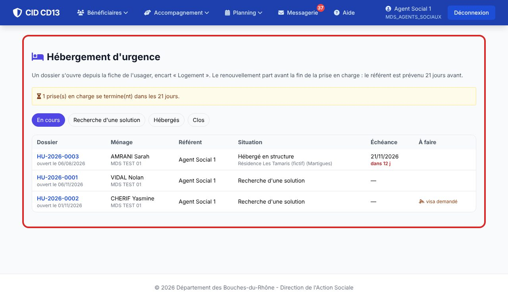
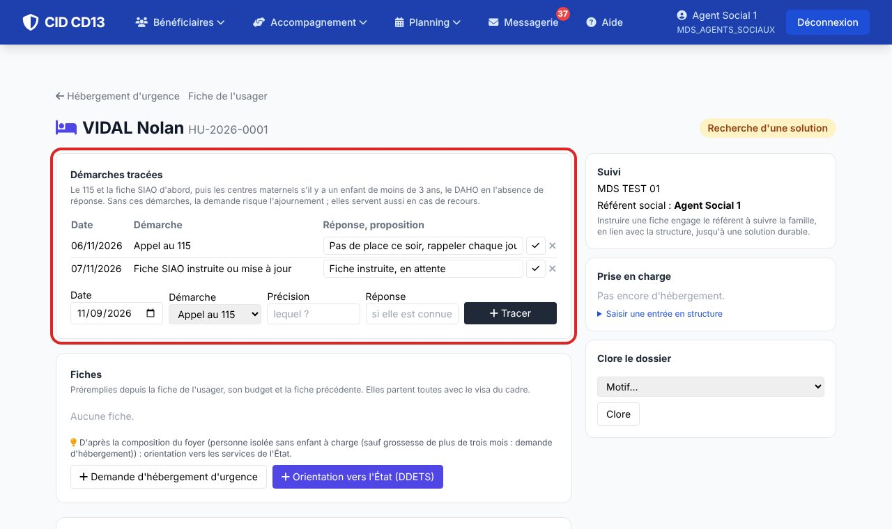
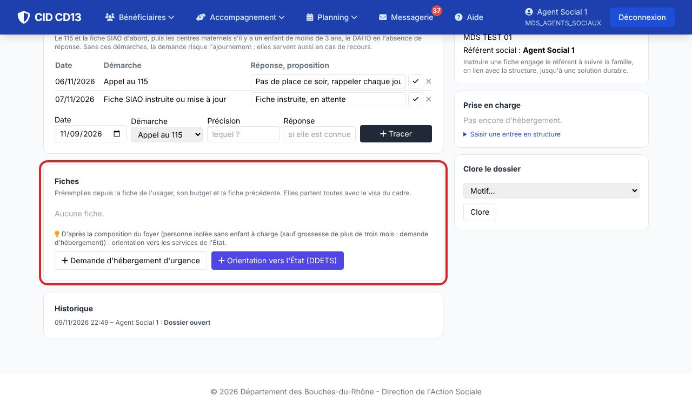
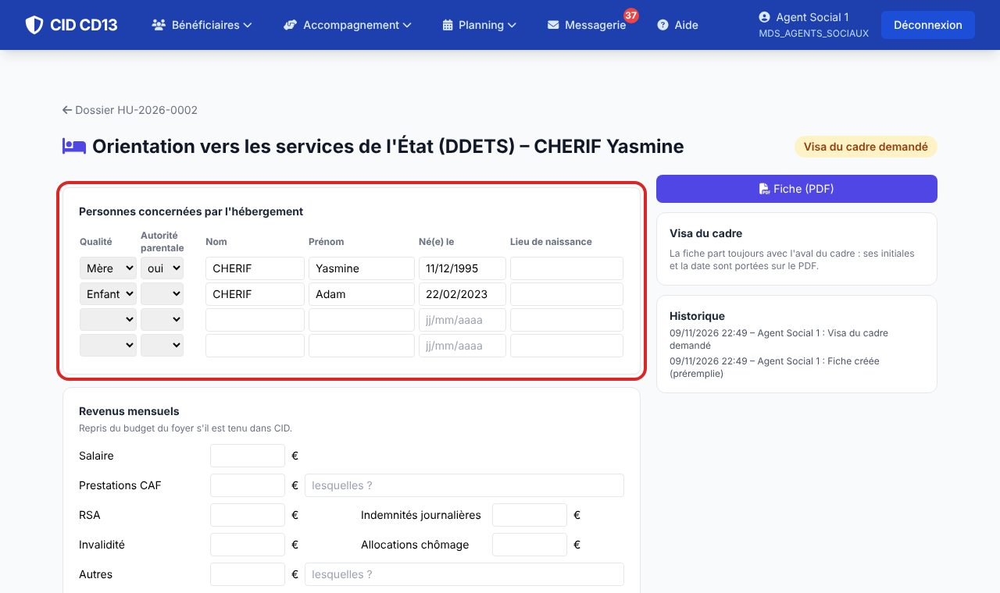
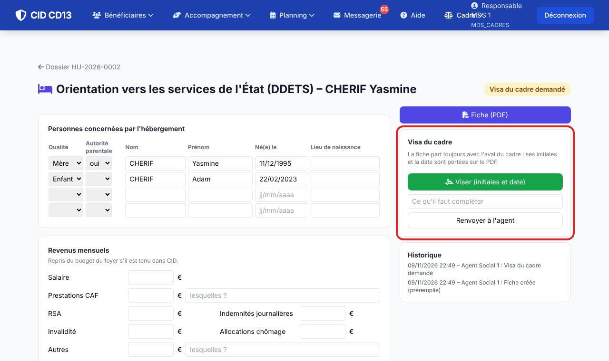
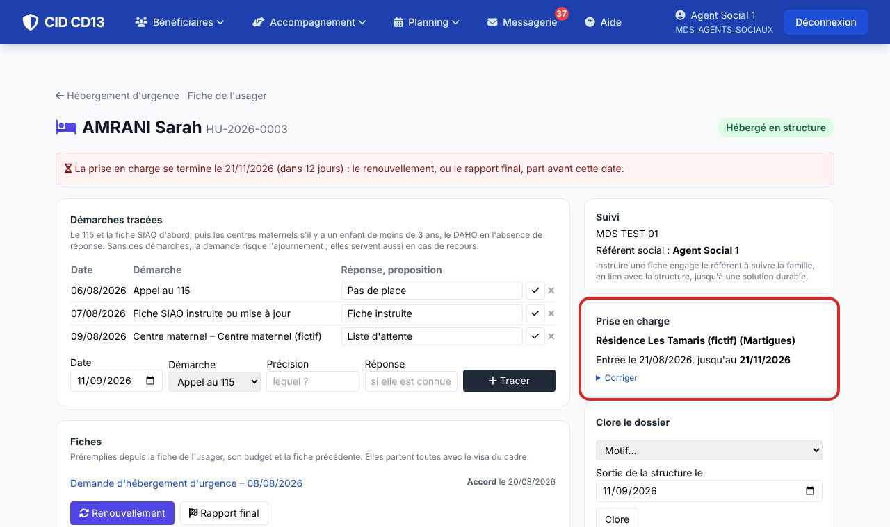
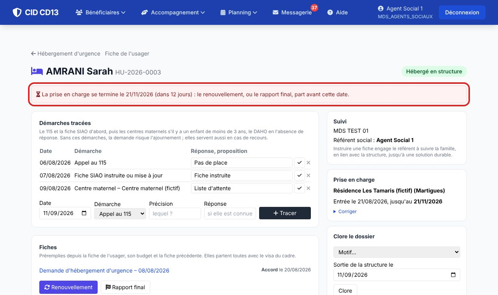
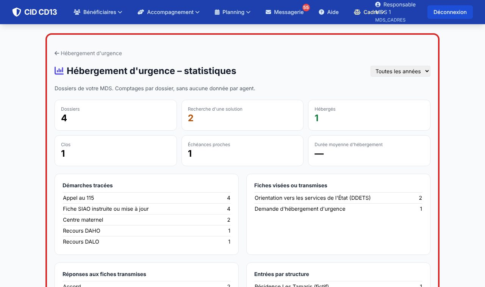

1Ouvrir le dossier


- Sur la fiche de l'usager, encart « Logement » : Hébergement d'urgence. Un seul dossier ouvert par ménage : s'il existe, CID le rouvre.
- La liste (Accompagnement → Hébergement d'urgence) montre les dossiers de votre MDS, l'échéance de chaque prise en charge et ce qui attend : visa demandé, réponse attendue.
2Tracer les démarches

- Notez chaque démarche avec sa date et sa réponse : appel au 115, fiche SIAO instruite ou mise à jour, centres maternels (enfant de moins de 3 ans), accueil mère-enfants, recours DAHO ou DALO, solution personnelle.
- CID signale ce qui manque : sans le 115 et la fiche SIAO, la demande risque l'ajournement. Ces traces servent aussi en cas de recours de la famille.
3Choisir la fiche

- CID propose la fiche d'après le foyer : demande d'hébergement d'urgence pour une mère isolée avec un enfant de moins de 3 ans (ou une femme enceinte de plus de trois mois : à vous de le savoir, CID ne l'enregistre pas) ; orientation vers les services de l'État pour un couple, une personne isolée ou un parent dont les enfants ont plus de 3 ans.
- Le choix reste le vôtre : les deux boutons sont toujours proposés.
4Compléter la fiche

- Les personnes du foyer, le téléphone, le dernier domicile, les revenus du budget et la demande de logement social sont repris. Vérifiez, puis rédigez le parcours logement (il doit apparaître clairement), l'histoire et le projet de la famille, votre analyse.
- L'information préoccupante et la mesure éducative ne sont jamais préremplies : vous cochez vous-même.
- Pour l'orientation vers l'État, le numéro de la carte d'identité ou le numéro AGDREF du titre de séjour est demandé : CID l'efface à la clôture du dossier.
5Visa du cadre et envoi

- Demander le visa du cadre : il est prévenu dans sa messagerie. Il clique sur Viser (ses initiales et la date sont portées sur le PDF) ou renvoie la fiche avec ce qu'il faut compléter.
- Envoi par mail : l'adresse du service est proposée, cochez les justificatifs d'identité parmi les documents de l'usager (pièce d'identité ou titre de séjour, livret de famille). Une fiche modifiée après le visa doit être visée de nouveau.
6La réponse et la prise en charge

- Quelle que soit la façon dont la réponse arrive (mail, téléphone), saisissez-la sur la fiche : accord, ajournement, refus. Pour un accord, indiquez la structure et la date d'entrée : CID calcule la fin de la prise en charge (durée de la structure si elle est réglée, sinon 3 mois).
- Une entrée obtenue autrement (115, centre maternel) se saisit directement dans le bloc « Prise en charge ».
7Renouveler à temps

- Le référent est prévenu trois semaines avant la fin. Renouvellement : la fiche reprend la précédente, il reste à écrire ce qui a changé (démarches, éléments socio-éducatifs, projets, évaluation). Durée proposée : 3 mois pour le premier renouvellement, puis 2 mois.
- À la sortie : Rapport final, puis clôture du dossier avec son motif (logement, hébergement durable, solution personnelle…).
8Statistiques

- Pour les cadres : dossiers, démarches tracées, fiches et réponses, entrées par structure, durée moyenne d'hébergement, motifs de clôture.
Bon à savoir
- Les structures d'hébergement (avec leurs durées d'accueil) et l'adresse de transmission se règlent en administration : Logement → Structures d'hébergement d'urgence, Destinataires des fiches.
- Instruire une fiche engage le référent à suivre la famille, avec la structure, jusqu'à une solution durable.
- La durée de conservation de ces dossiers est fixée par le délégué à la protection des données (code HEBERGEMENT_URGENCE).
Et ensuite ?
Cliquez sur une image pour l'agrandir. Le cadre rouge montre où cliquer ou quoi remplir. Toutes les données affichées sont fictives.